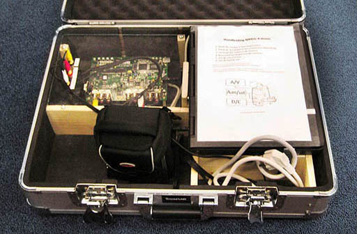

Below is a list of some of the projects I've done, relating to AI, algorithms, vision and embedded systems.
Expand allExpand all
2048 is a popular board game among mobile users, played on a 4 by 4 grid. In each move,
the player must choose to slide the tiles in one of four directions (left, right, up, down). If two tiles of the same value collide, they will merge into a tile with double the value.
After each move a random new tile is inserted. The objective is to maximize the tile values and the game is terminated when no move is possible.
The AI that I developed to solve this game is available on GitHub. The essence of the design is that boards are encoded as 64-bit
bitboards, which form the nodes in an expectimax tree.
Some clever performance enhancements make the AI extremely fast: up to 17 million nodes/second are evaluated on a single CPU core. The 32768 tile was reached after just 42 games in 48 hours. The AI can be seen playing live
at www.32768.eu.
For my graduation project, I developed a new
force-directed algorithm to draw metro maps using curves.
Research has shown that journeys are planned 50%
faster on a curved metro map of Paris than the official one.
In contrast to previous research, my algorithm does not require pre- or post-processing
steps and obtains better results. I received a top mark for my work (an "A+").
Web application for Coosto Read more
Coosto is a social media monitoring tool. It requires
accurate author and date information of internet posts.
Web template extraction
is done manually, using several custom command line tools. I proposed integrating these tools
in a web interface, got permission to work on this project and delivered the application in March
2014. Python, PHP and SQL were used server-side and the front-end was based on Backbone.js.
Speed sign recognition with a DSP Read more
As part of my bachelor program, I led a group of fellow students in developing
software for a digital signal processor to recognize speed signs.
We succesfully used Scrum and rapid prototyping in MATLAB to quickly design and
implement the necessary filters. I was responsible for the MATLAB prototyping framework,
a color segmentation filter
and the implementation of the Hough transform.

In 2010, during a co-op internship at TASS,
we developed a prototype that demonstrated the benefits of running
Linux on a digital signal processor (DSP).
The demonstration combined the best of two worlds: fast video encoding by a DSP and open-source software from the Linux ecosystem.
Specifically, the DSP encoded video from a camera and
performed speech recognition to add subtitles of what was being said to the video.
The video and subtitles were then streamed to a laptop.
Utility consumption visualizer Read more
EnyMate
is a small device that reads the gas, water and electricity dials of utility meters
and transmits these values via Bluetooth.
The official application could only show aggregated statistics so I wrote
a C# application that communicates with the device and plots the consumption in real-time.
Source code available here.